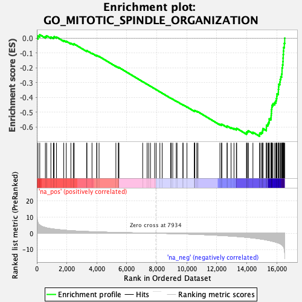

| | | Dataset | DE_genes2 |
| Phenotype | NoPhenotypeAvailable |
| Upregulated in class | na_neg |
| GeneSet | GO_MITOTIC_SPINDLE_ORGANIZATION |
| Enrichment Score (ES) | -0.66247356 |
| Normalized Enrichment Score (NES) | -2.1186817 |
| Nominal p-value | 0.0 |
| FDR q-value | 0.0 |
| FWER p-Value | 0.0 |
Table: GSEA Results Summary

Fig 1: Enrichment plot: GO_MITOTIC_SPINDLE_ORGANIZATION
Profile of the Running ES Score & Positions of GeneSet Members on the Rank Ordered List
| PROBE | GENE SYMBOL | GENE_TITLE | RANK IN GENE LIST | RANK METRIC SCORE | RUNNING ES | CORE ENRICHMENT | | 1 | DCTN2 | | | 78 | 6.594 | 0.0151 | No |
| 2 | RHOA | | | 194 | 5.113 | 0.0235 | No |
| 3 | CHMP4B | | | 569 | 3.511 | 0.0113 | No |
| 4 | CHMP1A | | | 654 | 3.296 | 0.0162 | No |
| 5 | MISP | | | 936 | 2.818 | 0.0075 | No |
| 6 | TUBG2 | | | 1106 | 2.598 | 0.0051 | No |
| 7 | PARP3 | | | 1151 | 2.539 | 0.0101 | No |
| 8 | DCTN1 | | | 1311 | 2.346 | 0.0074 | No |
| 9 | RAB11A | | | 1794 | 1.923 | -0.0161 | No |
| 10 | MAP4 | | | 1962 | 1.785 | -0.0209 | No |
| 11 | ANKRD53 | | | 2269 | 1.580 | -0.0347 | No |
| 12 | SUN2 | | | 2433 | 1.473 | -0.0402 | No |
| 13 | NUMA1 | | | 2493 | 1.446 | -0.0395 | No |
| 14 | GOLGA2 | | | 3319 | 1.068 | -0.0865 | No |
| 15 | CHMP2A | | | 3341 | 1.061 | -0.0845 | No |
| 16 | WRAP73 | | | 3678 | 0.939 | -0.1022 | No |
| 17 | DYNC1H1 | | | 3996 | 0.838 | -0.1189 | No |
| 18 | VCP | | | 3997 | 0.838 | -0.1164 | No |
| 19 | CLASP1 | | | 4148 | 0.794 | -0.1231 | No |
| 20 | AURKC | | | 5270 | 0.499 | -0.1899 | No |
| 21 | CHMP4C | | | 5432 | 0.464 | -0.1983 | No |
| 22 | PLK2 | | | 5464 | 0.458 | -0.1988 | No |
| 23 | MECP2 | | | 5467 | 0.457 | -0.1975 | No |
| 24 | STMN1 | | | 7057 | 0.145 | -0.2938 | No |
| 25 | TACC2 | | | 7352 | 0.088 | -0.3114 | No |
| 26 | FLNA | | | 7455 | 0.073 | -0.3174 | No |
| 27 | DRG1 | | | 7575 | 0.053 | -0.3245 | No |
| 28 | CHMP1B | | | 7855 | 0.010 | -0.3415 | No |
| 29 | TUBG1 | | | 7955 | -0.003 | -0.3475 | No |
| 30 | PKD1 | | | 8204 | -0.043 | -0.3625 | No |
| 31 | AAAS | | | 8357 | -0.067 | -0.3715 | No |
| 32 | SPICE1 | | | 8926 | -0.177 | -0.4055 | No |
| 33 | ZNF207 | | | 8957 | -0.183 | -0.4068 | No |
| 34 | EFHC1 | | | 9061 | -0.205 | -0.4125 | No |
| 35 | CHMP5 | | | 9296 | -0.265 | -0.4259 | No |
| 36 | KIF3B | | | 9347 | -0.276 | -0.4281 | No |
| 37 | HSPA1B | | | 9741 | -0.381 | -0.4509 | No |
| 38 | NUP62 | | | 9747 | -0.384 | -0.4500 | No |
| 39 | MAP10 | | | 10009 | -0.463 | -0.4645 | No |
| 40 | POC1A | | | 10504 | -0.626 | -0.4927 | No |
| 41 | TNKS | | | 10513 | -0.630 | -0.4913 | No |
| 42 | VPS4B | | | 10518 | -0.632 | -0.4896 | No |
| 43 | SBDS | | | 10533 | -0.636 | -0.4886 | No |
| 44 | WDR62 | | | 10665 | -0.682 | -0.4945 | No |
| 45 | RAE1 | | | 10740 | -0.704 | -0.4969 | No |
| 46 | STIL | | | 12207 | -1.330 | -0.5821 | No |
| 47 | RCC1 | | | 12313 | -1.379 | -0.5843 | No |
| 48 | EML1 | | | 12334 | -1.394 | -0.5814 | No |
| 49 | CLTC | | | 12685 | -1.582 | -0.5979 | No |
| 50 | FSD1 | | | 12693 | -1.586 | -0.5935 | No |
| 51 | RAN | | | 12950 | -1.743 | -0.6039 | No |
| 52 | ARHGEF10 | | | 13145 | -1.857 | -0.6101 | No |
| 53 | TBCE | | | 13303 | -1.956 | -0.6138 | No |
| 54 | SMC1A | | | 13325 | -1.971 | -0.6091 | No |
| 55 | KPNB1 | | | 13985 | -2.485 | -0.6417 | No |
| 56 | CHMP2B | | | 13987 | -2.487 | -0.6343 | No |
| 57 | NEK2 | | | 14051 | -2.552 | -0.6304 | No |
| 58 | CLASP2 | | | 14107 | -2.602 | -0.6259 | No |
| 59 | HSPA1A | | | 14408 | -2.884 | -0.6355 | No |
| 60 | PCNT | | | 14852 | -3.429 | -0.6521 | Yes |
| 61 | TACC1 | | | 14859 | -3.436 | -0.6422 | Yes |
| 62 | RACGAP1 | | | 14957 | -3.580 | -0.6373 | Yes |
| 63 | TACC3 | | | 15038 | -3.698 | -0.6310 | Yes |
| 64 | HNRNPU | | | 15058 | -3.735 | -0.6209 | Yes |
| 65 | KIF4B | | | 15081 | -3.764 | -0.6109 | Yes |
| 66 | MSTO1 | | | 15301 | -4.116 | -0.6118 | Yes |
| 67 | BCCIP | | | 15305 | -4.124 | -0.5996 | Yes |
| 68 | CHEK2 | | | 15311 | -4.128 | -0.5874 | Yes |
| 69 | CDC20 | | | 15404 | -4.309 | -0.5801 | Yes |
| 70 | CEP192 | | | 15451 | -4.390 | -0.5696 | Yes |
| 71 | MYBL2 | | | 15492 | -4.462 | -0.5586 | Yes |
| 72 | PIBF1 | | | 15494 | -4.463 | -0.5452 | Yes |
| 73 | AURKA | | | 15607 | -4.737 | -0.5378 | Yes |
| 74 | PLK1 | | | 15623 | -4.763 | -0.5243 | Yes |
| 75 | BORA | | | 15631 | -4.778 | -0.5104 | Yes |
| 76 | CCNB1 | | | 15643 | -4.796 | -0.4966 | Yes |
| 77 | KIFC1 | | | 15645 | -4.799 | -0.4822 | Yes |
| 78 | CCSAP | | | 15667 | -4.846 | -0.4689 | Yes |
| 79 | CEP126 | | | 15678 | -4.872 | -0.4548 | Yes |
| 80 | BIRC5 | | | 15741 | -4.998 | -0.4435 | Yes |
| 81 | TPX2 | | | 15859 | -5.288 | -0.4347 | Yes |
| 82 | MAP9 | | | 15939 | -5.481 | -0.4230 | Yes |
| 83 | MZT1 | | | 15969 | -5.556 | -0.4080 | Yes |
| 84 | TPR | | | 16001 | -5.664 | -0.3928 | Yes |
| 85 | PSRC1 | | | 16011 | -5.700 | -0.3762 | Yes |
| 86 | PRC1 | | | 16103 | -5.960 | -0.3638 | Yes |
| 87 | GNAI1 | | | 16106 | -5.966 | -0.3459 | Yes |
| 88 | AURKB | | | 16120 | -6.007 | -0.3286 | Yes |
| 89 | SPC25 | | | 16131 | -6.050 | -0.3110 | Yes |
| 90 | GPSM2 | | | 16202 | -6.325 | -0.2962 | Yes |
| 91 | KIF4A | | | 16226 | -6.459 | -0.2782 | Yes |
| 92 | CEP97 | | | 16267 | -6.661 | -0.2605 | Yes |
| 93 | SPAST | | | 16323 | -6.999 | -0.2428 | Yes |
| 94 | KIF23 | | | 16347 | -7.203 | -0.2225 | Yes |
| 95 | KIF2A | | | 16349 | -7.214 | -0.2008 | Yes |
| 96 | NUF2 | | | 16382 | -7.475 | -0.1802 | Yes |
| 97 | KIF11 | | | 16409 | -7.860 | -0.1581 | Yes |
| 98 | STAG2 | | | 16417 | -7.973 | -0.1345 | Yes |
| 99 | STAG1 | | | 16427 | -8.038 | -0.1109 | Yes |
| 100 | TTK | | | 16444 | -8.189 | -0.0872 | Yes |
| 101 | SMC3 | | | 16453 | -8.381 | -0.0624 | Yes |
| 102 | CENPE | | | 16501 | -10.010 | -0.0351 | Yes |
| 103 | NDC80 | | | 16527 | -12.233 | 0.0002 | Yes |
Table: GSEA details [plain text format]
Fig 2: GO_MITOTIC_SPINDLE_ORGANIZATION: Random ES distribution
Gene set null distribution of ES for GO_MITOTIC_SPINDLE_ORGANIZATION